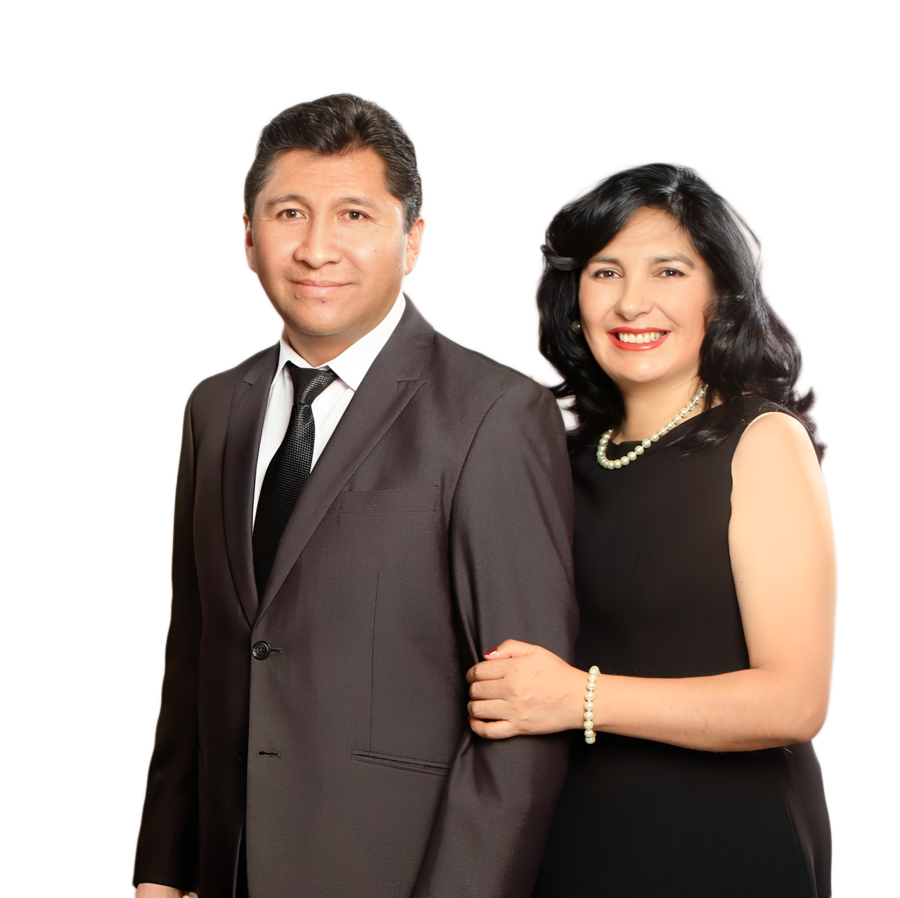

Conócenos
Quiénes somos y hacia dónde caminamos.
Quiénes somos
Una familia en Sucre
Visión: Ser una iglesia que camina junto a su comunidad en Sucre, formando familias que conocen a Jesús y viven su propósito.
Misión: Discipular a cada generación —niños, jóvenes y adultos— bajo el modelo celular y de los 12, con espacios propios para cada edad.
Valores: Fe, comunidad e identidad — por eso tenemos un culto especial en quechua para honrar a nuestra gente.
Pastoreados por
Apóstoles Ramiro Mamani & Patricia Mariño

Fe · Comunidad · Identidad
Este es un lugar para encontrarte con Dios y con una familia que te recibe tal como eres.